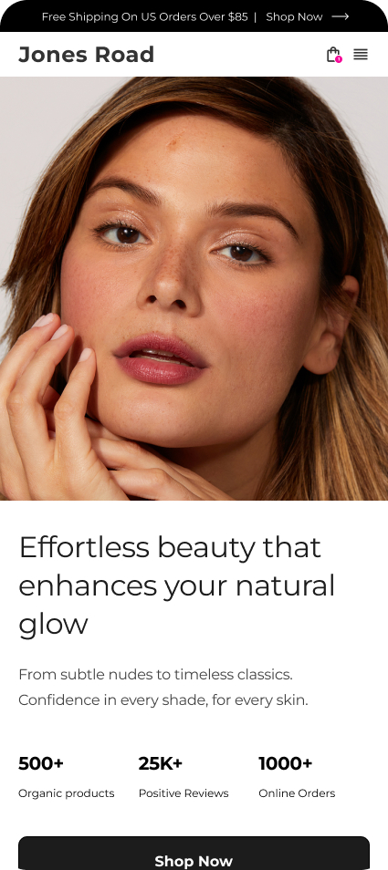
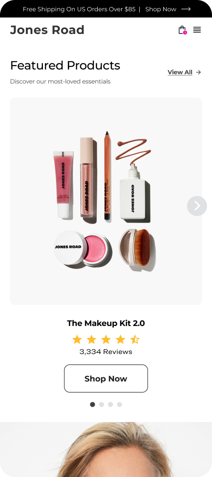
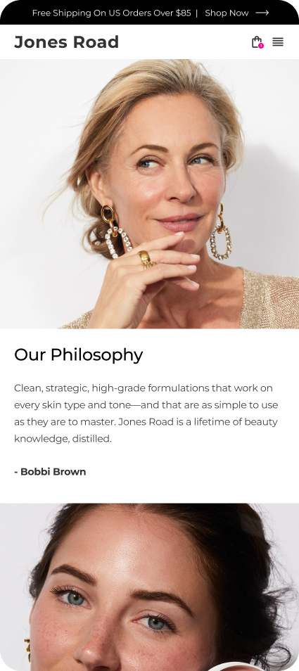
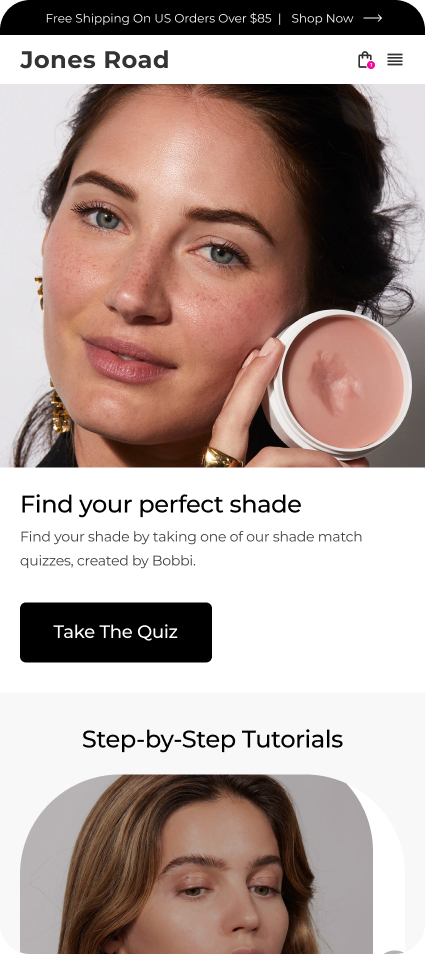
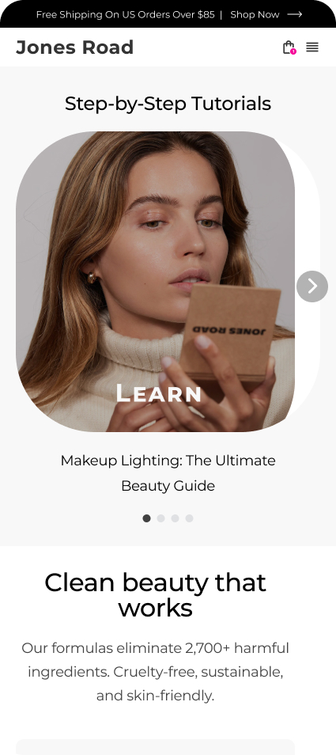
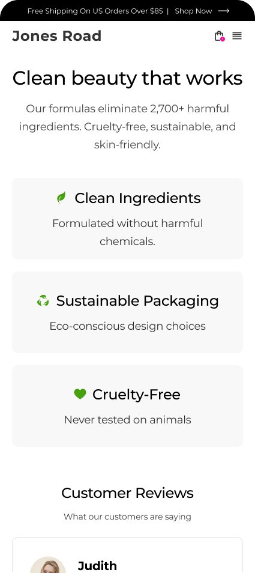
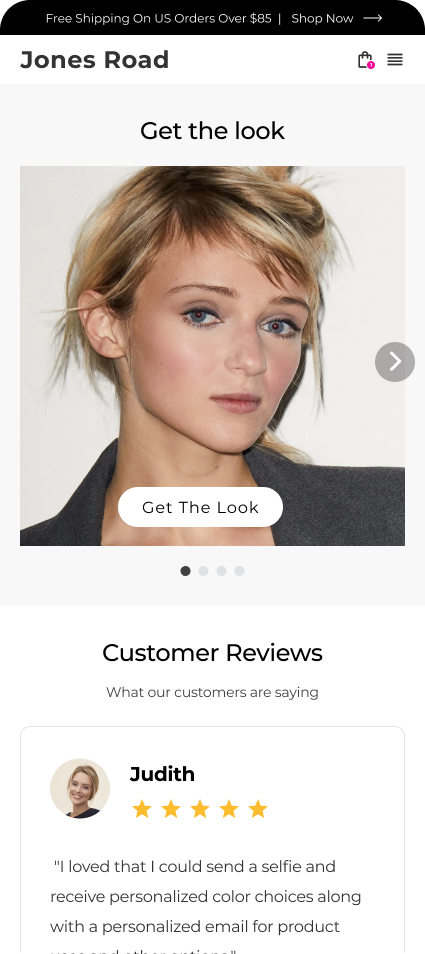
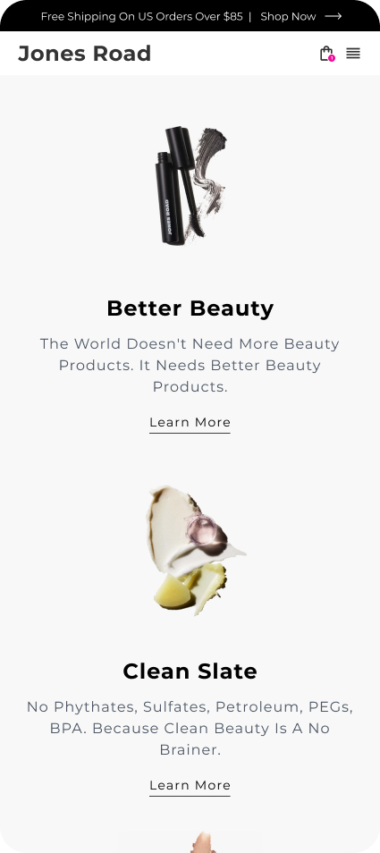
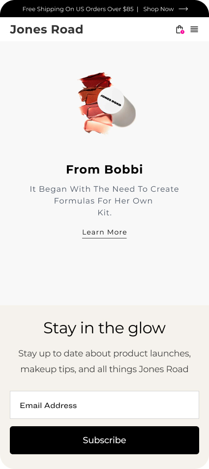

PROJECT OVERVIEW
- Project Name: Jones Road Beauty – Homepage Redesign
- Designer: Janani Vijay
- Project Type: E-commerce Homepage UX Redesign
- Project Duration: 10 Hours
- Tools Used: Figma
- Focus Area: Hierarchy, Navigation, Storytelling, Conversion
PROBLEM STATEMENT
The existing homepage lacked clear hierarchy and structured storytelling.
First-time users struggled to understand the brand’s value proposition,
navigation felt cluttered, and product discovery felt overwhelming.
The challenge was to create a guided experience that builds trust
while improving product discoverability and conversion.



TARGET AUDIENCE
- Users seeking clean, minimal beauty products
- First-time visitors needing shade assistance
- Ingredient-conscious buyers
- Busy users wanting quick, practical solutions
- Ethical and sustainability-driven consumers
GOALS
- Simplify navigation and reduce cognitive load
- Strengthen hero messaging and brand clarity
- Improve product discovery flow
- Integrate Shade Finder prominently
- Balance editorial storytelling with commerce



RESEARCH & ANALYSIS
- Homepage audit to identify hierarchy and UX gaps
- Competitive benchmarking (Glossier, Fenty Beauty, Ilia)
- Mapped friction points against user personas
- Identified priority user journeys (Best Sellers, Shade Finder, Philosophy)
DESIGN PROCESS
Step 1: Wireframing – Created simplified navigation structure and clearer content flow.
Step 2: Visual Exploration – Explored editorial-first and commerce-first layouts.
Step 3: High-Fidelity Design – Refined hierarchy, typography, spacing, and CTA visibility.
Step 4: Accessibility Review – Improved contrast ratios and readability.
KEY IMPROVEMENTS
- Stronger hero section with clear value proposition
- Simplified top navigation prioritizing key user actions
- Structured homepage flow: Brand → Best Sellers → Shade Finder → Philosophy → Tutorials
- Balanced lifestyle imagery with product focus
- Improved CTA visibility and content hierarchy



CHALLENGES & SOLUTIONS
- Challenge: Maintaining brand minimalism while improving clarity.
Solution: Used whitespace and typography hierarchy to guide users.
- Challenge: Avoiding product overload.
Solution: Featured curated best sellers instead of full catalog exposure.
- Challenge: Balancing storytelling with commerce.
Solution: Designed a guided narrative layout supporting conversion.
EXPECTED IMPACT
The redesign improves clarity for first-time visitors, strengthens
brand communication, reduces cognitive load, and creates a smoother
product discovery journey — leading to improved engagement and potential conversion uplift.
LEARNINGS
- Hierarchy is critical in luxury minimal design
- Editorial storytelling can coexist with conversion strategy
- Small navigation changes significantly impact usability